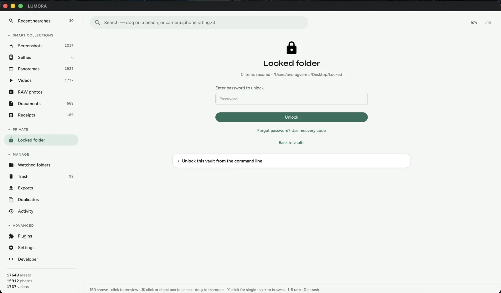

Immich vs LUMORA
Immich and LUMORA get compared for the same reason: both are open source, both keep photos off Google’s servers, and both ship AI search that feels closer to Google Photos than a dumb folder browser. They are not the same product category.
Immich is a self-hosted photo stack — server, database, machine-learning workers, web UI, and excellent mobile apps. You run it (usually with Docker) on a NAS, home lab, or VPS, then upload or sync libraries into that always-on service.
LUMORA is a desktop app (Tauri). You install it on Mac, Windows, or Linux, point it at folders that already exist on disk, and optional models run on the same machine. There is no photo server to keep healthy, no reverse proxy, and no requirement that a box stay online for search to work.
If that framing already answers the question, jump to who should choose which. The rest of this post is the honest comparison: architecture, day-two maintenance, AI, mobile, privacy, and the feature gaps that matter in practice.

Architecture in one sentence
Immich is a service you operate. LUMORA is an application you open.
That single difference cascades into everything else: how you install, whether your phone can upload overnight, what “offline” means, and how much ops work lives between you and a working library.
Feature snapshot
| Dimension | Immich | LUMORA |
|---|---|---|
| Shape | Self-hosted server + clients | Native desktop app |
| Install path | Docker / Compose, then clients | Download installer · point at folders |
| Always-on host | Required for full experience | Not required |
| Offline after setup | Clients need the server reachable | Yes — library + optional AI stay local |
| Licence | AGPL-3.0 | MIT |
| Semantic / AI search | Yes (server-side ML) | Yes (optional on-device CLIP) |
| Faces / people | Yes | Yes (optional InsightFace) |
| Mobile apps | First-class (backup / browse) | Desktop-first today |
| Multi-user / sharing | Built for household / users | Single-seat local library |
| Originals | In Immich storage / external libs | Stay where they already live |
| Encrypted private vault | Not a product focus | Locked folder (on-device keys) |
| Extensibility | Server jobs, APIs, ecosystem | Sandboxed JS plugins on disk |
Setup and day-two maintenance
Immich’s install story is familiar to self-hosters: Compose file, volumes, reverse proxy (often Traefik or Caddy), TLS, backups of Postgres and asset storage, upgrades that touch several containers, and a plan for when the NAS sleeps or the VPS reboots. Once it is dialed in, the payoff is real — phones upload in the background, the web UI is available from anywhere you expose it, and machine learning runs on the host you sized for it.
LUMORA’s install story is a desktop release: grab the DMG / EXE / AppImage, launch, import or watch folders. Indexing builds a private SQLite index next to the app’s data; originals are not relocated by import. Optional AI models download from Settings when you ask for them — checksum-verified, never required for a usable library.
Neither path is “free” of work. Immich’s work is operational (keep the stack healthy). LUMORA’s work is local (disk space for thumbs and embeddings, first-pass indexing time on large trees). Pick the kind of work you are willing to own.
What “offline” and “local” actually mean
Immich is local in the important sense that you host the data — not Google. It is not offline in the laptop-on-a-plane sense unless you also run the server on that same machine and keep it reachable. Phone apps and the web UI are clients of that service.
LUMORA is local in the folder sense: the photos already on your SSD are the library. After models are installed, semantic search, OCR, and faces do not need the network. If the laptop sleeps, nothing else has to stay awake for you to search tomorrow.
AI search and intelligence
Both products chase the same user feeling: type what you remember, get the right frames back.
- Immich runs ML as part of the server topology — embeddings and related jobs consume host CPU/GPU on the box that holds the library. Capability is excellent and improving quickly with the Immich community.
- LUMORA runs optional ONNX models on the desktop: CLIP for semantic search, OCR (PaddleOCR by default), InsightFace for people, MobileNet-class auto-tags, Florence-2 captions. Features are toggles — the app stays useful with zero models installed.
If you already have a GPU NAS sized for Immich’s workers, that hardware advantage stays with Immich. If you want search on the same laptop that holds the files — without standing up ML containers — LUMORA’s on-device path is the shorter one. More on LUMORA’s blend of FTS5 and CLIP: Building Offline AI Search.
Mobile, sync, and multi-device
This is Immich’s clearest win for many households. Official mobile apps make background backup and browse feel like Google Photos. Multiple people can share a deployment. External libraries and partner sharing cover common self-host scenarios.
LUMORA is desktop-first. Watched folders catch new files on the machine (or volumes mounted there). There is no first-party phone backup client today. If your primary need is “every phone in the house uploads nightly to one private Google Photos replacement,” Immich is the better fit.
Privacy, vaults, and trust boundaries
Both keep you off Big Tech photo clouds when you self-host or stay local. The remaining trust questions differ:
- Immich: you trust your own ops — updates, exposure of the web UI, auth, and backups. Remote access is powerful and is also the surface you must harden.
- LUMORA: the attack surface is a local app and its plugin sandbox. Plugins are folders on disk with no network by default. Sensitive items can move into an encrypted Locked folder with on-device keys and a recovery code — no hosted escrow.

Organisation, cleanup, and plugins
Immich covers albums, people, explore-style discovery, and a growing set of server-side workflows. Ecosystem scripts and the API fill many gaps.
LUMORA leans into desktop library craft: albums, tags, ratings, colour labels, timeline, smart collections, Places on an offline map, duplicate and blurry review with soft trash, and a sandboxed JavaScript plugin host for rename / export / organise actions you can read and fork.
Who should choose which
Choose Immich when you want:
- A self-hosted Google Photos replacement with strong mobile apps
- Multi-user access from phones, tablets, and browsers
- An always-on NAS or home lab you already enjoy operating
- Remote browse/upload as a first-class requirement
Choose LUMORA when you want:
- A local desktop app — install, import, search — no Docker
- Originals left in place on disk as the source of truth
- Optional on-device AI that works offline after download
- An encrypted Locked folder and MIT-licensed code you can audit
- Plugins as folders, not server jobs
Plenty of people will run both: Immich for phone intake and household sharing, LUMORA for a curated archive on a workstation. They are complementary more often than they are rivals.
Bottom line
Immich is excellent self-hosted software. It still needs a server that stays up. LUMORA is a desktop app: point it at folders, stay offline, and keep optional intelligence on the same machine that holds the files.
Short landing page: Immich alternative. Try a build: Download LUMORA · Get started · GitHub.